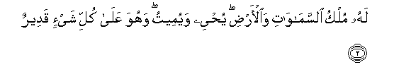
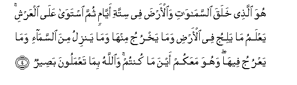
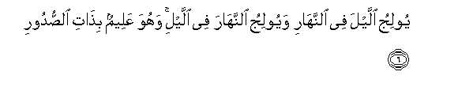
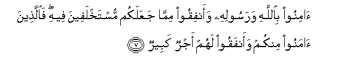
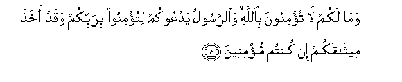
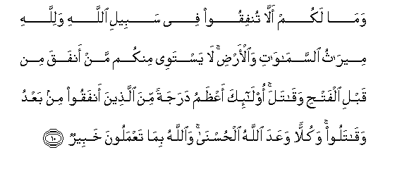

Sacred Texts Islam Index
Hypertext Qur'an Unicode Palmer Pickthall Yusuf Ali English Rodwell
Sūra LVII.: Ḥadīd, or Iron. Index
Previous Next

The Holy Quran, tr. by Yusuf Ali, [1934], at sacred-texts.com
Sūra LVII.: Ḥadīd, or Iron.
Section 1
1. Sabbaha lillahi ma fee alssamawati waal-ardi wahuwa alAAazeezu alhakeemu
1. Whatever is in
The heavens and on earth,—
Let it declare
The Praises and Glory of God:
For He is the Exalted
In Might, the Wise.

2. Lahu mulku alssamawati waal-ardi yuhyee wayumeetu wahuwa AAala kulli shay-in qadeerun
2. To Him belongs the dominion
Of the heavens and the earth:
It is He Who gives
Life and Death; and He
Has Power over all things.
3. Huwa al-awwalu waal-akhiru waalththahiru waalbatinu wahuwa bikulli shay-in AAaleemun
3. He is the First
And the Last,
The Evident
And the Immanent:
And He has full knowledge
Of all things.

4. Huwa allathee khalaqa alssamawati waal-arda fee sittati ayyamin thumma istawa AAala alAAarshi yaAAlamu ma yaliju fee al-ardi wama yakhruju minha wama yanzilu mina alssama-i wama yaAAruju feeha wahuwa maAAakum ayna ma kuntum waAllahu bima taAAmaloona baseerun
4. He it is Who created
The heavens and the earth
In six Days, and is moreover
Firmly established on the Throne
(Of authority). He knows
What enters within the earth
And what comes forth out
Of it, what comes down
From heaven and what mounts
Up to it. And He is
With you wheresoever ye
May be. And God sees
Well all that ye do.
5. Lahu mulku alssamawati waal-ardi wa-ila Allahi turjaAAu al-omooru
5. To Him belongs the dominion
Of the heavens and the earth:
And all affairs are
Referred back to God.

6. Yooliju allayla fee alnnahari wayooliju alnnahara fee allayi wahuwa AAaleemun bithati alssudoori
6. He merges Night into Day,
And He merges Day into Night;
And He has full knowledge
Of the secrets of (all) hearts.

7. Aminoo biAllahi warasoolihi waanfiqoo mimma jaAAalakum mustakhlafeena feehi faallatheena amanoo minkum waanfaqoo lahum ajrun kabeerun
7. Believe in God
And His Apostle,
And spend (in charity)
Out of the (substance)
Whereof He has made you
Heirs. For, those of you
Who believe and spend
(In charity),—for them
Is a great Reward.

8. Wama lakum la tu/minoona biAllahi waalrrasoolu yadAAookum litu/minoo birabbikum waqad akhatha meethaqakum in kuntum mu/mineena
8. What cause have ye
Why ye should not believe
In God?—And the Apostle
Invites you to believe
In your Lord, and has
Indeed taken your Covenant,
If ye are men of faith.
9. Huwa allathee yunazzilu AAala AAabdihi ayatin bayyinatin liyukhrijakum mina alththulumati ila alnnoori wa-inna Allaha bikum laraoofun raheemun
9. He is the One Who
Sends to His Servant
Manifest Signs, that He
May lead you from
The depths of Darkness
Into the Light And verily,
God is to you
Most kind and Merciful.

10. Wama lakum alla tunfiqoo fee sabeeli Allahi walillahi meerathu alssamawati waal-ardi la yastawee minkum man anfaqa min qabli alfathi waqatala ola-ika aAAthamu darajatan mina allatheena anfaqoo min baAAdu waqataloo wakullan waAAada Allahu alhusna waAllahu bima taAAmaloona khabeerun
10. And what cause have ye
Why ye should not spend
In the cause of God?—
For to God belongs
The heritage of the heavens
And the earth.
Not equal among you
Are those who spent (freely)
And fought, before the Victory,
(With those who did so later).
Those are higher in rank
Than those who spent (freely)
And fought afterwards.
But to all has God promised
A goodly (reward). And God
Is well acquainted
With all that ye do.